五十肩居家復健運動：疼痛期、冰凍期、解凍期，各做哪些動作？
五十肩居家復健運動：疼痛期、冰凍期、解凍期，各做哪些動作？
五十肩的運動要「依分期調整強度」：疼痛期以不痛的活動維持為主，僵硬期才逐步加強伸展，恢復期再加入肌力訓練。這篇把三個時期常用的居家動作整理成圖，方便在家對照練習。
如果想先了解為什麼不同時期的活動方式不一樣，可以先讀〈五十肩越痛越要拉嗎？從疼痛期到恢復期，活動方式其實不一樣〉。
一、先認識五十肩
五十肩醫學上稱為「沾黏性肩關節囊炎」（冰凍肩），是肩關節囊發炎、增厚、變緊，導致肩膀疼痛且各方向活動都受限。常見於 40–60 歲，糖尿病、甲狀腺疾病患者風險較高。病程常見分為三期，整體可能持續一到兩年以上：
| 分期 | 常見時間 | 主要表現 | 運動重點 |
|---|---|---|---|
| 疼痛期（冰凍進行期） | 約 2–9 個月 | 疼痛明顯、夜間痛、活動角度逐漸變小 | 溫和鐘擺、不痛範圍內活動 |
| 冰凍期（僵硬期） | 約 4–12 個月 | 疼痛減輕，但肩膀卡住、抬不高、轉不動 | 逐步加強伸展 |
| 解凍期（恢復期） | 約 5–24 個月 | 角度慢慢回來 | 伸展＋肌力訓練、回歸日常 |
分期時間因人而異，實際屬於哪一期請由醫師評估後決定。
動作編號說明：每個動作都有編號（疼痛期 A1–A5、冰凍期 B1–B6、解凍期 C1–C5）。醫師開立運動處方時會寫上編號，請依處方上的編號找到對應的動作練習。
二、運動前必看：共同原則
判斷運動量是否合適，看「運動後的疼痛」：運動中可以有緊緊、拉拉的感覺，但不應該刺痛，且運動後 1–2 小時內應回到原本的疼痛程度。
- 疼痛分數（0–10 分）：運動時疼痛建議控制在 3 分以內（疼痛期）、約 4–5 分以內（僵硬期、恢復期）。
- 第二天更痛、夜間更痛醒來：代表運動太多，下一次減半次數或縮小角度。
- 先熱敷再運動：熱敷肩膀 10–15 分鐘（溫熱不燙），或洗完熱水澡後做。運動後若疼痛明顯，可冷敷 10 分鐘。
- 少量多次：每天 2–3 回，每回 10–15 分鐘，比一次做很久更有幫助。
- 動作要慢、不要憋氣：伸展到緊的地方停住、正常呼吸，不要用力彈壓。
- 聽從個別指示：以下是常見建議，若醫師或物理治療師給你不同的安排，以個別指示為準。
三、第一期：疼痛期——不痛的範圍內「動一動」
這個階段的目標是減少疼痛、維持活動，不要硬拉；用力伸展反而可能讓發炎更明顯。
圖例：藍色外框＝患側手臂；虛線箭頭＝動作方向
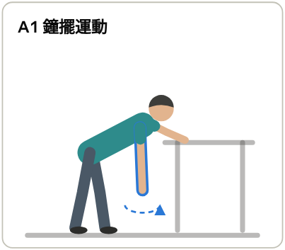
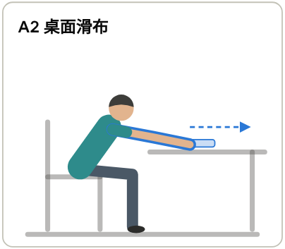
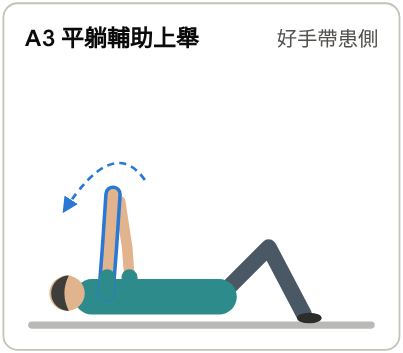
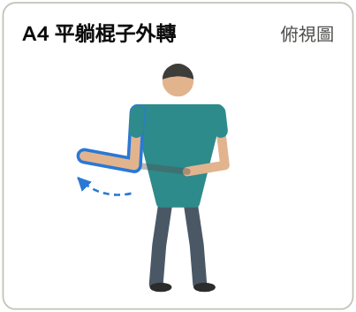
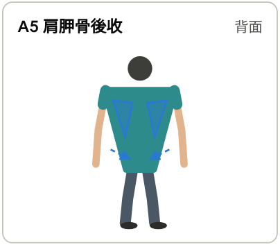
| 動作 | 怎麼做 | 次數 |
|---|---|---|
| A1 鐘擺運動 | 好手扶桌、身體前傾，患側手臂自然垂下放鬆。用身體輕輕前後、左右搖晃帶動手臂畫小圓，手臂本身不出力 | 各方向 10–20 下 |
| A2 桌面滑布 | 坐在桌前，手壓毛巾往前滑、身體跟著前傾，到緊緊的地方停 5 秒再慢慢滑回 | 10 下 |
| A3 平躺輔助上舉 | 平躺屈膝，好手握住患側手腕，由好手帶著患側往頭部方向抬，只抬到不痛的高度 | 10 下 |
| A4 平躺棍子外轉 | 平躺，患側手肘貼身彎 90 度（手肘下可墊毛巾），用好手推棍子（或雨傘）讓患側前臂慢慢往外打開 | 10 下 |
| A5 肩胛骨後收 | 坐或站直，肩膀放鬆、兩側肩胛骨輕輕往後下方夾緊，停 5 秒 | 10 下 |
小叮嚀：睡覺時可在患側手臂下墊一個小枕頭，或抱枕側睡在好側，減少夜間疼痛。
四、第二期：冰凍期——逐步拉開緊繃的關節囊
疼痛減輕、主要問題變成「卡住」時，可以在第一期動作之外加入以下伸展，每個姿勢在緊的地方停 15–30 秒。
圖例：藍色外框＝患側手臂；虛線箭頭＝動作方向
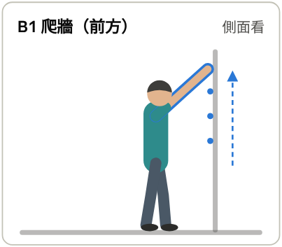
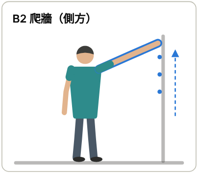
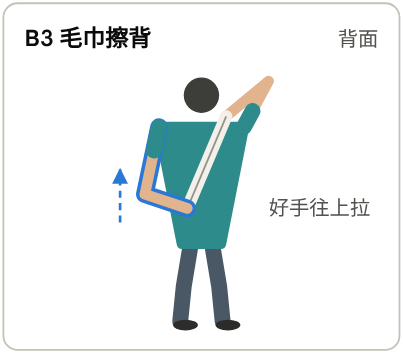
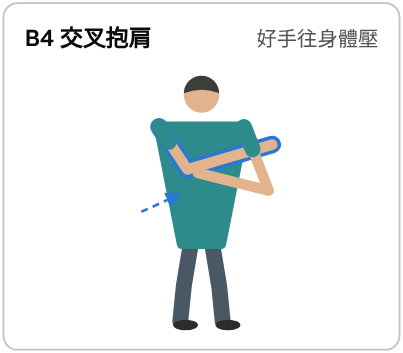
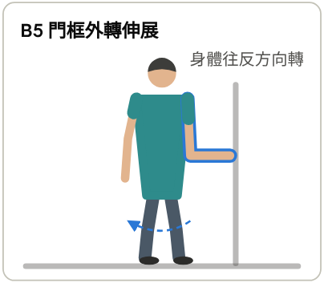
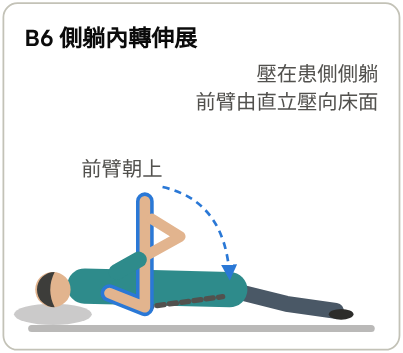
| 動作 | 怎麼做 | 次數 |
|---|---|---|
| B1 爬牆運動（前方） | 面對牆站，患側手指沿牆面一步步往上爬，到緊的地方停住，再慢慢爬下來；可在牆上做記號追蹤進步 | 10 下 |
| B2 爬牆運動（側方） | 患側身體側對牆，手指沿牆往側上方爬 | 10 下 |
| B3 毛巾擦背（內轉） | 雙手在背後拉毛巾，好手在上、患側在下，由好手往上拉，帶動患側手往背部上方移動 | 10 下 |
| B4 交叉抱肩（後側伸展） | 患側手臂橫過胸前，好手托住手肘往身體方向輕壓 | 停 30 秒 × 3 |
| B5 門框外轉伸展 | 患側手肘彎 90 度、手掌貼門框，身體慢慢往反方向轉，感覺肩膀前側被拉開 | 停 30 秒 × 3 |
| B6 側躺內轉伸展（sleeper stretch） | 側躺壓在患側，患側手肘彎 90 度，好手將患側前臂輕輕往床面壓 | 停 30 秒 × 3 |
這一期進步通常很慢，以「一週比一週好一點」為目標；若連續數週角度完全沒進步，建議回診評估。
五、第三期：解凍期——伸展＋肌力，回到日常
角度開始回來後，繼續做第二期的伸展，並加入肌力訓練，讓肩膀重新「穩定又有力」。彈力帶從最輕磅數開始，能輕鬆做完 15 下再加強。
圖例：藍色外框＝患側手臂；橘色線＝彈力帶；灰色虛線＝起始位置
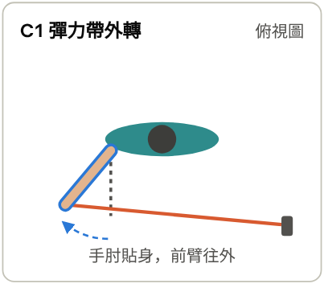
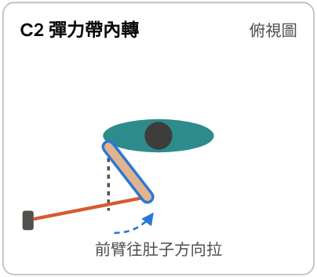
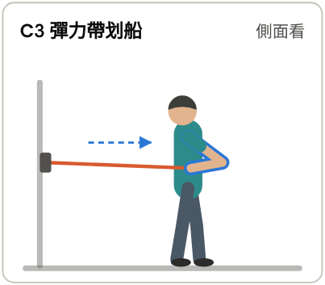
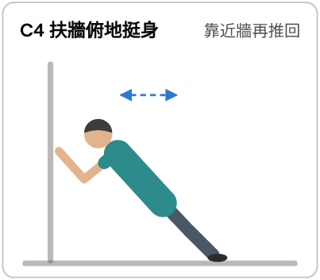
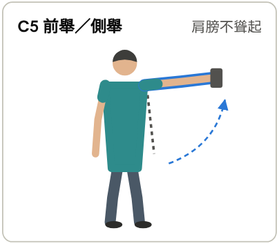
| 動作 | 怎麼做 | 次數 |
|---|---|---|
| C1 彈力帶外轉 | 手肘貼身彎 90 度（可夾一條毛巾），前臂拉彈力帶往外打開、慢慢回來 | 10–15 下 × 2–3 組 |
| C2 彈力帶內轉 | 同上姿勢，前臂往肚子方向拉 | 10–15 下 × 2–3 組 |
| C3 彈力帶划船（後拉） | 彈力帶固定在前方，雙手往後拉、肩胛骨夾緊 | 10–15 下 × 2–3 組 |
| C4 扶牆俯地挺身 | 雙手扶牆、身體前傾，彎手肘靠近牆再推回 | 10 下 × 2 組 |
| C5 前舉／側舉（小重量） | 手拿水瓶或 0.5–1 公斤啞鈴，在不聳肩的前提下慢慢舉到可以的高度 | 10 下 × 2 組 |
肌力訓練每週 3 次、隔天做即可；伸展仍建議每天做。角度恢復後，建議持續維持一段時間，再逐步回到運動與工作。
六、這些狀況請先停下來、盡快就醫
肩膀痛不一定是五十肩，出現以下任一情況，請暫停運動並就醫：
- 外傷（跌倒、撞擊）後突然抬不起手，或肩膀外觀變形
- 肩膀紅、腫、熱，或合併發燒
- 手臂麻木、無力加重，或疼痛從脖子放射到手指
- 左肩痛合併胸悶、喘不過氣、冷汗（需排除心臟問題，請立即就醫）
- 不明原因體重減輕、過去有癌症病史，或疼痛不分日夜持續加劇
- 運動後疼痛明顯加劇且超過 24 小時未緩解
另外，若持續運動 6–8 週仍無明顯改善，建議回診，由醫師重新評估診斷與後續安排。
本文僅供醫療衛生教育參考，不能取代醫師的診斷與治療。每個人的病情、體質與治療反應不同，文中提及的治療方式並非適用於所有人，亦不保證療效；侵入性治療可能伴隨副作用與風險。如有身體不適，請尋求合格醫療專業人員當面評估。
參考文獻
- Kelley MJ, et al. Shoulder pain and mobility deficits: adhesive capsulitis. Clinical practice guidelines. J Orthop Sports Phys Ther. 2013;43(5):A1–A31. doi:10.2519/jospt.2013.0302
- Diercks RL, Stevens M. Gentle thawing of the frozen shoulder. J Shoulder Elbow Surg. 2004;13(5):499–502. doi:10.1016/j.jse.2004.03.002